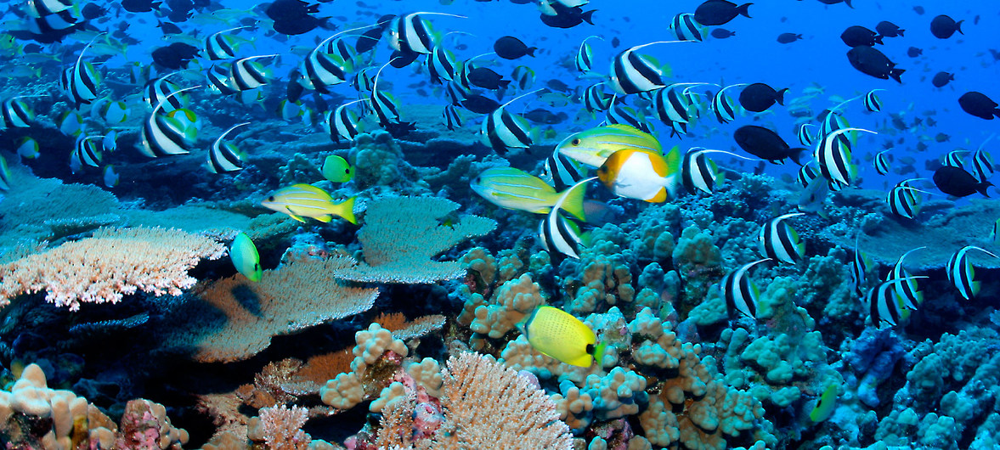

A nossa missão é dar a conhecer ao mundo formas de como proteger a vida marinha. Através de notícias, projetos, voluntariados, entre outros.
A visão da S.M.L. (Save Marine Life) é chegar a todas as pessoas do mundo e a longo prazo torná-las interessadas e focadas em salvar a vida marinha e protegê-la a todo o custo. Todos os shareholders que trabalham na área e o nosso grupo em particular, trabalham para ir mais além e ajudar a empresa a crescer de forma a que atinja o número 1 em Portugal. Trabalhamos arduamente para que a proteção da vida marinha se torne ainda mais importante do que já é.
